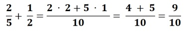
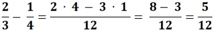

SUMA DE FRACCIONES CON DISTINTO DENOMINADOR
Para sumar fracciones de distinto denominador, se reducen las fracciones a común denominador; después se suman los numeradores y se deja el mismo denominador. Ejemplo

RESTA DE FRACCIONES CON DISTINTO DENOMINADOR
Para restar fracciones de distinto denominador, se reducen las fracciones a común denominador; después se restan los numeradores y se deja el mismo denominador 